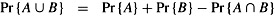
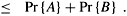
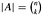
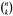
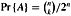
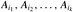

|
|
< Day Day Up > |
|
Probability is an essential tool for the design and analysis of probabilistic and randomized algorithms. This section reviews basic probability theory.
We define probability in terms of a sample space S, which is a set whose elements are called elementary events. Each elementary event can be viewed as a possible outcome of an experiment. For the experiment of flipping two distinguishable coins, we can view the sample space as consisting of the set of all possible 2-strings over {H, T}:
S = {HH, HT, TH, TT}.
An event is a subset[1] of the sample space S. For example, in the experiment of flipping two coins, the event of obtaining one head and one tail is {HT, TH}. The event S is called the certain event, and the event ø is called the null event. We say that two events A and B are mutually exclusive if A ∩ B =⊘. We sometimes treat an elementary event s ∈ S as the event {s}. By definition, all elementary events are mutually exclusive.
A probability distribution Pr{} on a sample space S is a mapping from events of S to real numbers such that the following probability axioms are satisfied:
Pr{A} ≥ 0 for any event A.
Pr{S} = 1.
Pr{A ∪ B} = Pr{A} + Pr{B} for any two mutually exclusive events A and B. More generally, for any (finite or countably infinite) sequence of events A1, A2,... that are pairwise mutually exclusive,
We call Pr{A} the probability of the event A. We note here that axiom 2 is a normalization requirement: there is really nothing fundamental about choosing 1 as the probability of the certain event, except that it is natural and convenient.
Several results follow immediately from these axioms and basic set theory (see Section B.1). The null event ø has probability Pr⊘} = 0. If A ⊆ B, then Pr{A} ≤ Pr{B}. Using Ā to denote the event S - A (the complement of A), we have Pr{Ā} = 1 - Pr{A}. For any two events A and B,
| (C.12) |  |
| (C.13) |  |
In our coin-flipping example, suppose that each of the four elementary events has probability 1/4. Then the probability of getting at least one head is
|
Pr{HH, HT, TH} |
= |
Pr{HH} + Pr{HT} + Pr{TH} |
|
= |
3/4. |
Alternatively, since the probability of getting strictly less than one head is Pr{TT} = 1/4, the probability of getting at least one head is 1 - 1/4 = 3/4.
A probability distribution is discrete if it is defined over a finite or countably infinite sample space. Let S be the sample space. Then for any event A,
since elementary events, specifically those in A, are mutually exclusive. If S is finite and every elementary event s ∈ S has probability
Pr{s} = 1/ |S|,
then we have the uniform probability distribution on S. In such a case the experiment is often described as "picking an element of S at random."
As an example, consider the process of flipping a fair coin, one for which the probability of obtaining a head is the same as the probability of obtaining a tail, that is, 1/2. If we flip the coin n times, we have the uniform probability distribution defined on the sample space S = {H, T}n, a set of size 2n. Each elementary event in S can be represented as a string of length n over {H, T}, and each occurs with probability 1/2n. The event
A = {exactly k heads and exactly n - k tails occur}
is a subset of S of size , since there are  strings of length n over {H, T} that contain exactly k H's. The probability of event A is thus .
The continuous uniform probability distribution is an example of a probability distribution in which not all subsets of the sample space are considered to be events. The continuous uniform probability distribution is defined over a closed interval [a, b] of the reals, where a < b. Intuitively, we want each point in the interval [a, b] to be "equally likely." There is an uncountable number of points, however, so if we give all points the same finite, positive probability, we cannot simultaneously satisfy axioms 2 and 3. For this reason, we would like to associate a probability only with some of the subsets of S in such a way that the axioms are satisfied for these events.
For any closed interval [c, d], where a ≤ c ≤ d ≤ b, the continuous uniform probability distribution defines the probability of the event [c, d] to be
Note that for any point x = [x, x], the probability of x is 0. If we remove the endpoints of an interval [c, d], we obtain the open interval (c, d). Since [c, d] = [c, c] ∪ (c, d) ∪ [d, d], axiom 3 gives us Pr{[c, d]} = Pr{(c, d)}. Generally, the set of events for the continuous uniform probability distribution is any subset of the sample space [a, b] that can be obtained by a finite or countable union of open and closed intervals.
Sometimes we have some prior partial knowledge about the outcome of an experiment. For example, suppose that a friend has flipped two fair coins and has told you that at least one of the coins showed a head. What is the probability that both coins are heads? The information given eliminates the possibility of two tails. The three remaining elementary events are equally likely, so we infer that each occurs with probability 1/3. Since only one of these elementary events shows two heads, the answer to our question is 1/3.
Conditional probability formalizes the notion of having prior partial knowledge of the outcome of an experiment. The conditional probability of an event A given that another event B occurs is defined to be
whenever Pr{B} ≠ 0. (We read "Pr{A | B}" as "the probability of A given B.") Intuitively, since we are given that event B occurs, the event that A also occurs is A ∩ B. That is, A ∩ B is the set of outcomes in which both A and B occur. Since the outcome is one of the elementary events in B, we normalize the probabilities of all the elementary events in B by dividing them by Pr{B}, so that they sum to 1. The conditional probability of A given B is, therefore, the ratio of the probability of event A ∩ B to the probability of event B. In the example above, A is the event that both coins are heads, and B is the event that at least one coin is a head. Thus, Pr{A | B} = (1/4)/(3/4) = 1/3.
Two events are independent if
which is equivalent, if Pr{B} ≠ 0, to the condition
Pr{A | B} = Pr{A}.
For example, suppose that two fair coins are flipped and that the outcomes are independent. Then the probability of two heads is (1/2)(1/2) = 1/4. Now suppose that one event is that the first coin comes up heads and the other event is that the coins come up differently. Each of these events occurs with probability 1/2, and the probability that both events occur is 1/4; thus, according to the definition of independence, the events are independent-even though one might think that both events depend on the first coin. Finally, suppose that the coins are welded together so that they both fall heads or both fall tails and that the two possibilities are equally likely. Then the probability that each coin comes up heads is 1/2, but the probability that they both come up heads is 1/2 ≠ (1/2)(1/2). Consequently, the event that one comes up heads and the event that the other comes up heads are not independent.
A collection A1, A2,..., An of events is said to be pairwise independent if
Pr{Ai ∩ Aj} = Pr{Ai}Pr{Aj}
for all 1 ≤ i < j ≤ n. We say that the events of the collection are (mutually) independent if every k-subset  of the collection, where 2 ≤ k ≤ n and 1 ≤ i1 < i2 < < ik ≤ n, satisfies
For example, suppose we flip two fair coins. Let A1 be the event that the first coin is heads, let A2 be the event that the second coin is heads, and let A3 be the event that the two coins are different. We have
|
Pr{A1} |
= |
1/2, |
|
Pr{A2} |
= |
1/2, |
|
Pr{A3} |
= |
1/2, |
|
Pr{A1 ∩ A2} |
= |
1/4, |
|
Pr{A1 ∩ A3} |
= |
1/4, |
|
Pr{A2 ∩ A3} |
= |
1/4, |
|
Pr{A1 ∩ A2 ∩ A3} |
= |
0. |
Since for 1 ≤ i < j ≤ 3, we have Pr{Ai ∩ Aj} = Pr{Ai} Pr{Aj} = 1/4, the events A1, A2, and A3 are pairwise independent. The events are not mutually independent, however, because Pr{A1 ∩ A2 ∩ A3} = 0 and Pr{A1} Pr{A2} Pr{A3} = 1/8 ≠ 0.
From the definition of conditional probability (C.14) and the commutative law A ∩ B = B ∩ A, it follows that for two events A and B, each with nonzero probability,
Solving for Pr{A | B}, we obtain
which is known as Bayes's theorem. The denominator Pr{B} is a normalizing constant that we can reexpress as follows. Since B = (B ∩ A) ∪ (B ∩ Ā) and B ∩ A and B ∩ Ā are mutually exclusive events,
|
Pr{B} |
= |
Pr{B ∩ A} + Pr{B ∩ Ā} |
|
= |
Pr{A} Pr {B | A} + Pr{Ā}Pr{B | Ā}. |
Substituting into equation (C.17), we obtain an equivalent form of Bayes's theorem:
Bayes's theorem can simplify the computing of conditional probabilities. For example, suppose that we have a fair coin and a biased coin that always comes up heads. We run an experiment consisting of three independent events: one of the two coins is chosen at random, the coin is flipped once, and then it is flipped again. Suppose that the chosen coin comes up heads both times. What is the probability that it is biased?
We solve this problem using Bayes's theorem. Let A be the event that the biased coin is chosen, and let B be the event that the coin comes up heads both times. We wish to determine Pr{A | B}. We have Pr{A} = 1/2, Pr{B | A} = 1, Pr{Ā} = 1/2, and Pr{B | Ā} = 1/4; hence,
Professor Rosencrantz flips a fair coin once. Professor Guildenstern flips a fair coin twice. What is the probability that Professor Rosencrantz obtains more heads than Professor Guildenstern?
A deck of 10 cards, each bearing a distinct number from 1 to 10, is shuffled to mix the cards thoroughly. Three cards are removed one at a time from the deck. What is the probability that the three cards are selected in sorted (increasing) order?
Describe a procedure that takes as input two integers a and b such that 0 < a < b and, using fair coin flips, produces as output heads with probability a/b and tails with probability (b - a)/b. Give a bound on the expected number of coin flips, which should be O(1). (Hint: Represent a/b in binary.)
Prove that for any collection of events A1, A2,..., An,
Pr{A1 ∩ A2 ∩ ··· ∩ An} = Pr{A1} · Pr{A2 | A1} · Pr{A3 | A1 ∩ A2}
Pr{An | A1 ∩ A2 ∩ ··· ∩ An-1}.
Show how to construct a set of n events that are pairwise independent but such that no subset of k > 2 of them is mutually independent.
Two events A and B are conditionally independent, given C, if
Pr{A ∩ B | C} = Pr{A | C} · Pr{B | C}.
Give a simple but nontrivial example of two events that are not independent but are conditionally independent given a third event.
You are a contestant in a game show in which a prize is hidden behind one of three curtains. You will win the prize if you select the correct curtain. After you have picked one curtain but before the curtain is lifted, the emcee lifts one of the other curtains, knowing that it will reveal an empty stage, and asks if you would like to switch from your current selection to the remaining curtain. How would your chances change if you switch?
A prison warden has randomly picked one prisoner among three to go free. The other two will be executed. The guard knows which one will go free but is forbidden to give any prisoner information regarding his status. Let us call the prisoners X, Y, and Z. Prisoner X asks the guard privately which of Y or Z will be executed,arguing that since he already knows that at least one of them must die, the guard won't be revealing any information about his own status. The guard tells X that Y is to be executed. Prisoner X feels happier now, since he figures that either he or prisoner Z will go free, which means that his probability of going free is now 1/2. Is he right, or are his chances still 1/3? Explain.
[1]For a general probability distribution, there may be some subsets of the sample space S that are not considered to be events. This situation usually arises when the sample space is uncountably infinite. The main requirement is that the set of events of a sample space be closed under the operations of taking the complement of an event, forming the union of a finite or countable number of events, and taking the intersection of a finite or countable number of events. Most of the probability distributions we shall see are over finite or countable sample spaces, and we shall generally consider all subsets of a sample space to be events. A notable exception is the continuous uniform probability distribution, which will be presented shortly.
|
|
< Day Day Up > |
|